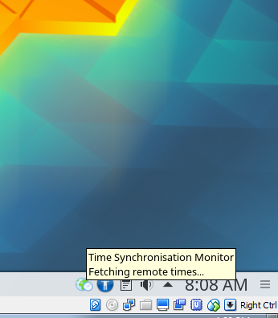

Meaning, with the user account isolation lockdown I introduced a blocking bug last minute. 
troubadour:
We cannot open sdwdate’s log either. The konsole pops with a warning
chdir: Permission denied
Fixed.
The passive tooltip (popup) is broken in latest Whonix-Gateway VirtualBox (KDE) (not yet uploaded) build. I mean these tooltips as seen in this screenshot:

(It’s probably also broken in the currently uploaded developers-only build?)
Previously it was broken because the package sni-qt was not installed. Not installed this time either. However, installation of sni-qt did not fix this issue.
Could you try to fix this please?
Not sure it’s fixable.
In a VBox fresh install (Debian 9, VBox 5.2.6, Whonix 14.0.0.6.6).
When hovering on the sdwdate-gui icon, the KDE default information shows (pops), like for any other systray icon. No tooltip.
Can you try:
Restart sdwdate from the menu, hover again quickly on the icon and stay there. The tooltip will show on the next status change, without the status however (Time Synchronisation Monitor with a blank line below).
I believe this is an issue with KDE. In Qubes, when starting sdwdate-gui for each anon-vm separately (same script as in VirtualBox/KVM), the tooltip shows as intended.
1 Like
Hi. Are there alternative taskbar icons that don’t need compositor support? Although I don’t mind it some people might think there is something broken. Here’s a screencap by another user of the artifact: Whonix VirtualBox 14.0.0.6.8 Release Candidate - Testers Wanted!
troubadour:
Can you try:
Restart sdwdate from the menu, hover again quickly on the icon and stay there. The tooltip will show on the next status change, without the status however (
Time Synchronisation Monitorwith a blank line below).
All true.
I believe this is an issue with KDE. In Qubes, when starting sdwdate-gui for each anon-vm separately (same script as in VirtualBox/KVM), the tooltip shows as intended.
Confirmed.
Update: The icon disappears totally now leaving a patch that lookws like more taskbar.
2018-06-28 01:37:21 - sdwdate - WARNING - Maximum allowed number of failures reached in pool 1 (6 of 18). Giving up.
If the problem occurs too frequently, please report it.
Sleeping for 13 minutes.
Bad usability design by me especially in context of Testers wanted! Blocking networking until sdwdate finished! (status of sdwdate-gui).
Do you see the case for waiting randomized minutes and nanoseconds to improve anonymity (to avoid being detected as Whonix / sdwdate users) by avoiding predictable traffic between sdwdate time fetches?
On success sdwdate is currently waiting randomly between 60 and 180 minutes. (Plus always randomized nanoseconds.)
On error (even at first boot!) sdwdate is currently waiting between 5 and 15 minutes.
What about not waiting at all in case of error? Consequences:
- possibly continuous traffic to onion time sources
- predictable traffic?
- sdwdate log size ever increasing (but could find a solution maybe)
Maybe on error wait between 0 and 10 seconds? Or between 5 and 15 seconds? Or between 5 and 60 seconds? Or…?
//cc @HulaHoop
No - as network observers outside Tor are not in a position to perform traffic analysis at this level and if you have a malicious guard you are vulnerable to a lot more attacks than them knowing you use Whonix.
I’m in favor of eliminating the delays and making it perform the checks immediately to improve response time especially with the blocking until sync feature.
1 Like
HulaHoop:
No - as network observers outside Tor are not in a position to perform traffic analysis at this level and if you have a malicious guard you are vulnerable to a lot more attacks than them knowing you use Whonix.
Imagine an idle Whonix-Gateway. Not issuing any traffic. But predictable
every “33” minutes it issues traffic. Since Tor does not use any
padding… That would at least be ground for suspicion that
Whonix/sdwdate is in use?
I’m in favor of eliminating the delays and making it perform the checks immediately to improve response time especially with the blocking until sync feature.
How many retries? Infinite retries? Perhaps increased waiting time with
ever failed attempt to save traffic?
(Until some maximum waiting retry time is reached. Meaning, wait maximum
5-10 minutes before next attempt or so after 10 failed attempts.)
Tor cells are fixed size so completely opaque to an outside observer. Tor has recently gained padding inside the network but its a multi-part project and some parts of the implementation are being worked out. There is always some form of communication between the client and relays even when idle - whether closing circuits or switching. There is no reason to worry about it being a problem.
Three successive retry attempts before checking at the next time interval that its currently programmed to do - so as to not overload the network or use up resources.
1 Like
Bunch of commits to master done.
Retry logic changes:
- The first 3 retry attempts wait less than 1 second.
- wait minimum: retry_on_error_counter multiplied with 1
- wait maximum: retry_on_error_counter multiplied with 5
For example after 5 retries
- wait minimum: 5 multiplied with 1 = 5 seconds
- wait maximum: 5 multiplied with 5 = 25 seconds
So wait a random amount between 5 and 25 seconds. (Plus nanoseconds randomization in any case.)
But there is also a “wait maximum maximum” of 180 * 60 seconds (180 minutes).
How does that sound?
Any idea what is causing this / what is so special about that use of kdesudo?
Upgrade for non-qubes sdwdate-gui.
- same menu as sdwdate-gui-qubes in Whonix-Gateway
- same menu minus Tor actions in Whonix-Workstation
- the sdwdate/tor status message popup is updated too.
1 Like
Sorry for the delay in reviewing this. python isn’t my strong skill and this is quite difficult stuff for me. I am finally on it now though
sdwdate_gui.py
It changes from
## Copyright (C) 2015 - 2018 ENCRYPTED SUPPORT LP <adrelanos@riseup.net>
to
## Copyright (C) 2015 - 2017 Patrick Schleizer <adrelanos@riseup.net>
so I wonder if it was based on an older revision?
Wondering if some of the smaller bug fixes I introduced got lost in the process?
Could you please try git merge origin/master?
Not sure that was a typo. & launches the process into the background.
Did you try…?
/usr/share/sdwdate-gui/unit-test/fuzzer
This enhancement got lost.
/usr/lib/sdwdate-gui/log-viewer
Not sure which version of restart_sdwdate is the correct one.
def restart_sdwdate(self):
if self.tor_status == 'running':
if os.path.exists('/var/run/sdwdate/success'):
Popen('sudo --non-interactive rm /var/run/sdwdate/success', shell=True)
Popen('sudo --non-interactive systemctl --no-pager --no-block restart sdwdate', shell=True)
def restart_sdwdate():
Popen('sudo --non-interactive /usr/lib/sdwdate/restart_fresh', shell=True)
Popen('sudo --non-interactive systemctl --no-pager --no-block restart sdwdate', shell=True)
Taking the latter.
Why would should sdwdate only be restarted if Tor is running? if self.tor_status == 'running':
Otherwise silently ignored? Doesn’t look right.
sudo --non-interactive /usr/lib/sdwdate/restart_fresh gives us more flexibility and keeps it out sdwdate-gui.
Using this branch now:
Could you please have a look if this makes sense?
def stop_sdwdate(self):
if self.tor_status == 'running':
Popen('sudo --non-interactive systemctl --no-pager --no-block stop sdwdate', shell=True)
Why stop sdwdate only if Tor is running?
Few more minor commits to that branch.